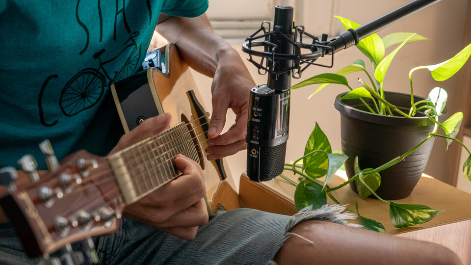

The gear I use
Updated on March 17, 2023.
Updated on March 17, 2023.
On this page you’ll find the gear that I use for various aspects of my life.
Tech, music, photography, video, sports and coffee.

| Steinberg UR22mkII | The audio interface I use for recording! I like it because I can plug two jacks in front (or XLR) as well as my keyboard in MIDI in the back. It can output to both headphones and speakers with knobs to control both outputs individually which is very practical when recording! |
| Zoom H2n | Portable battery-powered microphone. It's extremely versatile and it's the single microphone I use for everything form recording my motorcycle engine sound while I ride to recording vocals and acoustic instruments as well as vlogs when mounted on top of my camera. It's probably not the very best at any of those categories but it delivers solid results for all of them which is quite impressive. I wrote a full article about it on the blog! |
| Edifier R2000DB Studio Monitors | I didn't want to spend a crazy amount of money on studio monitors. Those get the job done real well for me! I also have the R1700BT connected to my turntable in my living room. |
| Sennheiser HD 598 Headphones | Great open-back headphones for studio recording! Although they don't seem to be sold anymore. I also have the Sennheiser HD 558 that are closed-back which was a must when working in an office (so that my colleagues can't hear audio leaks of what I'm listening to). Also not sold anymore. Oh and I also have the Sennheiser CX 300B MK II Precision Enhanced Bass Earbuds because I really like what Sennheiser does and I especially like "enhanced bass". |
| On-Stage WS7500 Workstation | I'll also include here the desk I use for music recording which I also wrote about here! |
| Fender Standard Stratocaster Left-Handed | The guitar I always dreamed to have. üòç |
| Epiphone Les Paul Custom PRO Left-Handed | To play Money for Nothing. |
| Fender Squier Vintage Modified Jazz Bass '70s Left-Handed | Solid sounding bass for a great price. Awesome. |
| BeaverCreek Travel Size Acoustic-Electric Left-Handed | Guitar I bring to the lake, camping, chalet, or just to jam around without plugging anything! See my review on YouTube! |
| Korg microKORG S | Great synthesizer that can also act as a MIDI controller. I got it because the fact I can easily use it with my talk box (see below) unlike with a MIDI-only keyboard that would require to go through a virtual instrument first and back out to the talk box. Also it can run on battery and has a built-in speaker which is awesome to take on the go! I really love it. |
| Dunlop Cry Baby 535Q Multi-Wah | I overuse it and I love it. Make it funky! |
| Dunlop MXR Talk Box | For some sick G-funk vibes. |

| Panasonic LUMIX DMC-LX100K | The camera I use for everything! It's small and lightweight yet has the biggest sensor you can find on a compact camera (Micro Four Thirds as opposed to 1 inch for the majority of compact cameras). Allows to get more light in for higher image quality and low light response. Easily carryable, I always take it with me strapped around my side while I hike so I can draw it in a matter of seconds if I want to capture something. All the pictures you can see on my photograpy website are taken with it. You can also check out the settings I use for it. Nowadays, you might want to look at the new version the LX100 II. |

| Insta360 ONE X2 | That's now the main action camera I use for all my ski videos as well as my vertical Instagram reels and stories of skiing. It's one of the cheapest 360 cameras I could find because it's a few years old now, and the quality is amazing enough for me already. It films in 5K which is perfect to reframe the 360 video for YouTube or Instagram, the battery life is insane and it deals really well with the cold and wind while skiing. I can just put it on my helmet and not care about framing my shot perfectly because it's 360 I can get the perfect framing in post! Game changer for me. I put a lens guard on it to avoid scratching the lens (any compatible aftermarket one does the job, the official one doesn't seem higher quality or more solid). |
| Panasonic LUMIX DMC-LX100K | I just mentioned it in the photo category, but this also does an awesome job at video! It can shoot 4K (albeit not at 60 FPS) which looks especially crisp when scaled down to 1080p or 1440p for YouTube and allows for some cropping margin in post without losing quality. Because it's small and lightweight it's convenient to vlog with, especially with the hot shoe mount that allows adding a microphone on top (that said it doesn't have a mini jack input so you have to record and sync the audio separately). Here's the settings I use for it. And again, check out the LX100 II which is the latest model if you want this camera! |
| LX100 DC Coupler | This allows to power my LX100 from DC power (wall outlet) so that when I do very long shooting sessions I don't need to change the battery every few hours. Game changer for me! |
| Quick Release Connector | Allows to connect the stock strap of my LX100 in a way that I can very easily remove it. This is crucial for me when vlogging because otherwise the strap rubbing and shaking around when I move is picked up by the microphone. With this I can just remove the strap in a few seconds when I want to vlog! I initially considered the Peak Design Leash for that but I figured that it was overkill for me, I don't need to be that fancy. üòÇ |
| GoPro HERO (2018) | That's probably one of the cheapest GoPro that I could buy new back then! Same hardware as the HERO5 Black but with some software limitations. I give you the settings I use on it in this article. |
| Osprey Kestrel 48 | My main backpack, a bit big for a single day but also does the job for a few days if I pack somewhat light. |
| Osprey Xenith 75 | Big bag for big adventures, perfect when I'm going both camping and climbing for a few days. Also the top lid is detachable to be used as a day pack and I use it literally all the time! |
| Osprey Farpoint 40 | One of the biggest bags you can take as a carry-on with most airlines. You can get away with bigger in a lot of cases (most of the time they're not strict about it) but if you want the peace of mind to know it technically meets the requirements, this is it. Perfect especially when I want to travel with only a carry-on (this is so convenient). |
| Baratza Encore | IMO the best grinder you can get at that price level if you're getting into specialty coffee! |
| Bialetti Moka Express, 6-Cup | The worldwide reference as far as moka pot is concerned. Classic Italian-style coffee! Watch my video about it! |